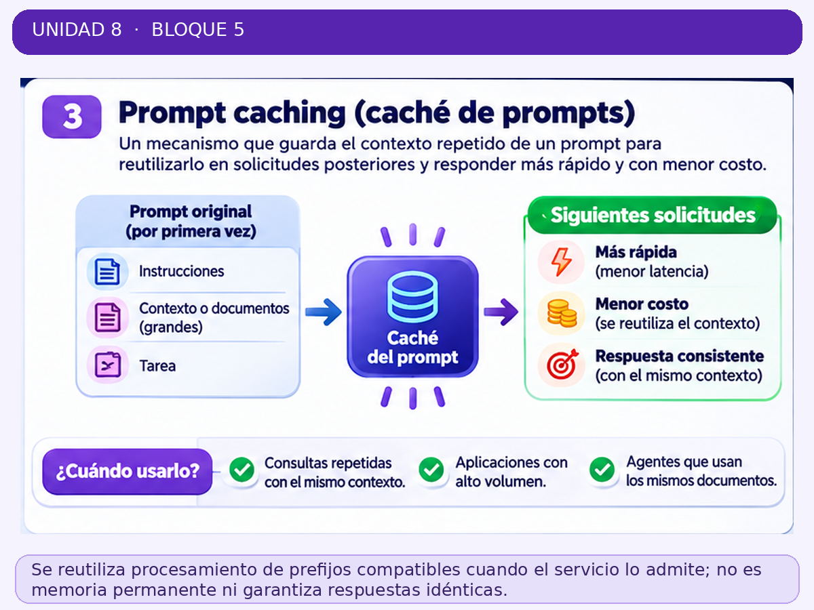

Prompt caching
Reutilizar parte repetida de un prompt puede reducir procesamiento, latencia y costo cuando existe compatibilidad.

Reutilizar parte repetida de un prompt puede reducir procesamiento, latencia y costo cuando existe compatibilidad.
